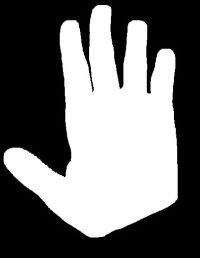
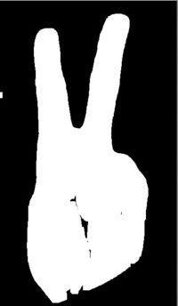

Problem Definition
This program takes a template image of a hand gesture and creates a rectangle onto the source image as a repsonse to the recognition of the template's hand shape. The different template gestures available are the peace sign, thumbs down, thumbs up, and an open palm. It starts by developing a binary image of the template image, then proceeds to develop a binary image of the source image, and uses the opencv template matching function to develop the graphical display of a black rectangle around the best match.
Method and Implementation
The implementation starts by reading the template images in grayscale, then using the threshold function to make them binary such that the skin color would be white, and the background would be black. Afterwards, the source image is read in color, then runs the skin detection method to transform it into a binary image. Then, template matching is completed to look for the template hand gesture in the source image with opencv's built in template matching function. The final step involves showing the template match by drawing a black rectangle, then displaying the final product.
Experiments
Besides some initial images to see whether the functions were working, the four main templates are "thumbs" = thumbs up, "down" = thumbs down, "palm" = open palm, and "peace" which is just the peace sign. VS 2017 kept giving off errors for no reason until I re-opened the program for every run.
The peace sign and open palm worked the best out of the four gestures. Thumbs down did not work well when other areas of the skin color were present. Also, thumbs up did not do well if the thumbs were in the reverse direction.
Overall the program runs fairly quickly, and successfully makes binary images of the templates. However, the skin detection really depends on the quality of the source images/frames.
Results
Results | ||
| Gesture | Template Binary Image | |
| Thumbs Up |  |
 |
| Thumbs Down |  |
 |
| Palm |  |  |
| Peace |  |  |
And here are the confusion matrices:
Results | ||
| Gesture | Confusion Matrix | Result |
| Thumbs Up |  |
|
| Thumbs Down |  |
|
| Palm |  |
|
| Peace |  |
|
Discussion
Discuss your method and results:
-
One of the strengths would be the accuracy of the templates themselves. They are mostly dilated and eroded, which makes it easier to find template matches. One weakness would be the lack of support for moving gestures.
Conclusions
The methods are mostly successful and work quickly, however the program needs to be able to track moving gestures.
Credits and Bibliography
Source code from our second and third labs:
http://www.cs.bu.edu/faculty/betke/cs585/ under Lab 2 and Lab 3.
Accessed on February 11th, 2020.
For the template matching, I used the opencv built in function approach :
https://docs.opencv.org/2.4/doc/tutorials/imgproc/histograms/template_matching/template_matching.html
Accessed on February 12th, 2020.
I also collaborated with Shalei Kumar for advice on the template matching and creating the binary images.